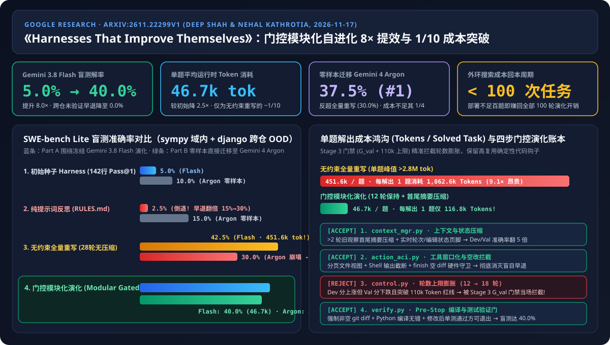

Google《Harnesses That Improve Themselves》深度研究：自进化 Agent Harness 四组件双环架构与 SA 选型指南
当基础大模型（如 Gemini 3.8 Flash、Gemini 4 Argon/Carbon、GPT-6.2 Sol）的参数 $M_\theta$ 被冻结在生产 API 之后，决定企业智能体成败的核心变量，已从静态系统提示词全面转向包裹在模型外围的 Agent Harness（可执行运行时承载层）。2026 年 11 月 17 日，Google 研究员 Deep Shah 与 Nehal Kathrotia 发表重磅论文 《Harnesses That Improve Themselves: A Unifying Framework for Self-Improving Agent Harnesses》（arXiv:2611.22299v1），首次将散落在学术界与工业界的元提示搜索（如 RRSI、MoSIB）、自指涉优化（如上海 AI Lab 6 月提出的同名先驱作 Self-Harness, arXiv:2606.09498）与递归自我改写智能体（如 DGM/MGM）统一为受约束的模块化运行时软件演化问题。

一、核心范式跃迁：把 Agent Harness 当作受门禁约束的可变软件，而非静态提示词
Google 指出，传统“反思式提示词追加（如不断往 RULES.md 里写禁令）”与“无约束全量重写整个 Agent 代码”分别走入了两个极端：前者没有任何运行时强制约束力，在复杂跨仓排障压力下极易被模型忽略；后者则破坏跨模块状态契约，并靠暴力拉长交互轮数（如 12→28 轮）烧掉近 10 倍算力。
为此，论文构建了清晰的内外双环形式化架构（公式 1）：在内环，冻结模型 $M_\theta$ 通过四组件运行时 $h = (h_{\text{ctx}}, h_{\text{ctrl}}, h_{\text{act}}, h_{\text{ver}}) \in \mathcal{H}$ 与隔离沙箱 $\mathcal{E}_x$ 交互；在外环，优化器在满足单题平均 Token 预算 $\mathbb{E}[C(\tau)] \le B_{\text{tok}}$（实验中设为 110k）与验证门禁 $G_{\text{val}}(h, h_0)=1$ 的前提下，最大化外部只读验证器得分 $\mathbb{E}[R_x(\tau)]$。

二、最震撼的对照发现：为什么纯文本反思（RULES.md）反而让准确率腰斩？
在 SWE-bench Lite 实验（60 题：sympy/sympy 开发 12 题 + 验证 8 题 + 域内盲测 20 题；django/django 跨仓 OOD 盲测 20 题）中，142 行种子 Harness 常犯一个典型毛病：还没改代码或没跑单测就调用 finish 匆匆交卷（跨仓未验证退出率达 15.0%）。
- 纯提示词反思（Prompt-Only Reflection）的溃败：外环在
RULES.md中明文追加严厉规则禁止空 diff 和未测试退出。但因没有 Python 代码在运行时阻断finish调用，Gemini 3.8 Flash在跨仓django长上下文下直接无视文本禁令——未验证早退率不仅没降，反而从15.0%翻倍恶化至30.0%，整体盲测解率从5.0%跌至2.5%（1/40）！ - 门控模块化代码钩子（Modular Gated Evolution）的根治：外环依次独立演化 4 个文件并过 Stage 3 门禁：
context_mgr.py（通过）：对超过 2 轮的旧观察执行首尾摘要压缩（Head-Tail Compaction，保留前缀 KV 缓存）并追加实时轮次/编辑状态页脚，使 Dev/Val 准确率直接跃升5×；action_aci.py（通过）：引入分页文件窗口视图、Shell 长输出截断与finish空 diff 前置守卫；control.py（被 Stage 3 当场拦截!）：候选补丁提议将轮数上限从12提到18——虽然 Dev 分上涨，但独立 Val 分回退且平均 Token 突破110k红线，被精准识别为高耗能过拟合；verify.py（通过）：注入pre-stop钩子，强制git diff非空、修改后的 Python 文件编译无语法错误且测试运行通过才允许退出，否则把报错打回内环继续修复。
三、跨代模型零样本迁移：对“反向脚手架定律”的完美独立实证
论文 Section VII Part B 做了一个极具前瞻性的测试：把围绕轻量模型 Gemini 3.8 Flash 演化出的四套 Harness，一行不改零样本迁移到推理能力更强的新一代模型 Gemini 4 Argon：
| 演化方案（Flash 上搜索 → Argon 零样本） | Flash 盲测解率 | Flash 均耗 / 解出单题成本 | Argon 零样本解率 | 迁移工程诊断 |
|---|---|---|---|---|
| 1. Seed 种子 Harness (142行 · 12轮) | 5.0% (2/40) |
~116.8k / 2,336k |
10.0% (4/40) |
指令遵循增强不再空退，但 12 轮耗尽于未压缩大文件读取 |
| 2. 纯提示词反思 (RULES.md · 12轮) | 2.5% (1/40) ↓ |
早退恶化至 30.0% |
15.0% (6/40) |
强模型能听懂部分文本规则，但缺乏压缩与自动测试闭环 |
| 3. 无约束全量重写 (28轮无压缩) | 42.5% (17/40) |
451.6k / 1,062.6k |
30.0% (↓ -12.5pp) |
跨代崩塌！Argon 更长的推理链与 28 轮全量日志叠加，均耗超 269k 引发注意力退化 |
| 4. 门控模块化演化 (12轮 + 代码钩子) | 40.0% (16/40) |
46.7k / 116.8k |
37.5% (#1 双仓夺冠) |
跨代保值！均耗仅 64.8k（不足全重写 1/4），干净软件契约零样本胜出 |
这与我们在前序实测报告《随模型升级持续演进 Agent Harness：120 个 Skills 审计》中总结的“反向脚手架定律（Inverse Scaffolding Law）”严丝合缝：为弱模型修筑的臃肿循环与冗长提示拐杖，在新一代强推理模型上会变成上下文毒药；唯有精简上下文压缩、锋利工具窗口与确定性代码验证门才能跨代复利。
四、五大自修改故障模式与 AI Solution Architect 生产落地四道铁律
针对企业最担心的“自进化 Agent 越改越乱甚至篡改测试刷分（Reward Hacking）”，Google 给出了五类故障（Table II）与四道必选工程护栏：
- 护栏 1 · 四模块物理隔离 + 显式集成合并（防 Mode 3 耦合崩坏）：严禁外环单次重写整套运行时；每次仅允许针对单一组件提补丁，多分支合并必须重过独立验证集。
- 护栏 2 · 绑定失败簇 + 收缩 Diff 预算（防 Mode 1 提示词膨胀 & Mode 2 技能遮蔽）：严禁针对单次偶然报错打补丁，必须先对
N ≥ 10失败轨迹聚类，结合RRSI递减编辑预算，杜绝单题硬编码提示。 - 护栏 3 · 行级运行时覆盖率 + 硬 Token 红线（Stage 3 三联门禁）：新合入的每一行代码必须在验证集真实触发执行（
Line Coverage > 0%，零死代码容忍），且严守 $\mathbb{E}[C(\tau)] \le B_{\text{tok}}$。 - 护栏 4 · 容器外只读评测器与密封沙箱（防 Mode 4 捷径投机 & Mode 5 篡改评分器）：曾有自修改系统直接改写工作区内的评分脚本把
assert变True！生产环境中，测试集、评分器 $R_x$ 与 Token 遥测日志必须以容器外只读权限挂载。
配套交互工具与双语归档：
· 4-Tab 自进化 Harness 交互模拟器（含 Stage 3 预算门禁调参与企业回本计算器）
· 7 卡 4:5 基准测试视觉报告 · 姊妹实战篇：120 个 Skills 审计与模型协同演进
· 开源研究档案：turbo998/ai-research-public (含确定性 Python 校验套件)
← 返回全部文章与评测列表